and so the curtain falls, a velvet wave crashes, spilling scarlet folds between you and it, between there and here, between the awakening world and the show beyond, where, isolated and unsurveilled, and purportedly over, you suspect the action continues, its music resuming, characters convening, for a plot that proceeds indifferent to the audience behind, unfettered by spectators who drift, serene and actionless, and wonder what happens next, the fate of which, you imagine, lurks in the silent marrow of things, ticking, 
and so the house lamps rise and the illusion ends, the overheads aglow and beckoning detail with a call heard and seized before colour and texture resurface, their intricacies spangled across forgotten contours of upholstery and flooring, among discarded tickets, discarded clothes, dregs sprent beneath persons waiting, pausing, or perhaps considering, like you, what the difference between the auditorium and the spectacle is, and why that exists at all, in a crack that opens, a rift that gapes, 
and so gradually the murmurs louden, a rustle of pockets mounts whilst words rend the quietude, their speakers turned upright, disorganised, in a crowd whose stretches become steps, whispers a chorus, with banalities, some happier than others, cohering to whelm contemplation and divert reception, and to which reflection now yields, wondering when the clamour will cease, when the dialogue will stop, although you realise it will not but will relent only for the show, halting only for the show’s return, when the show begins again 
...